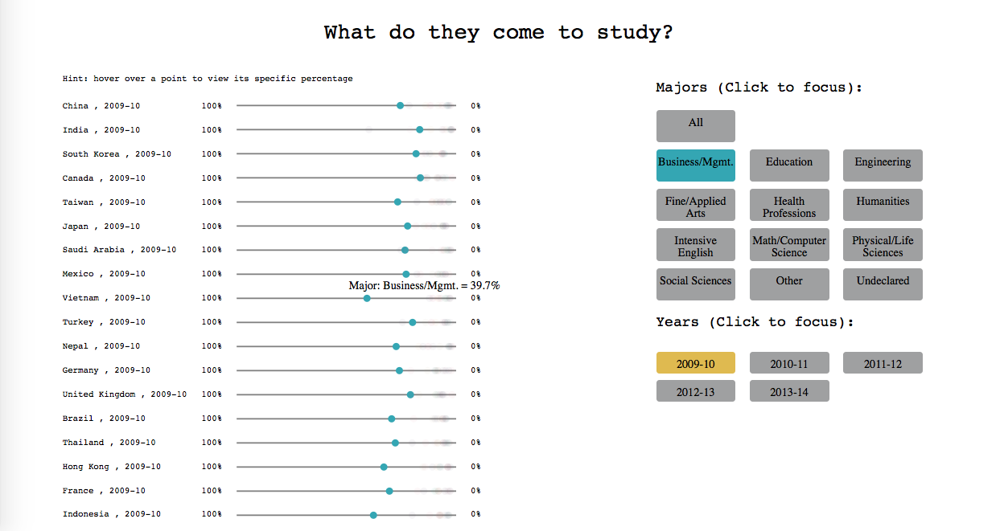
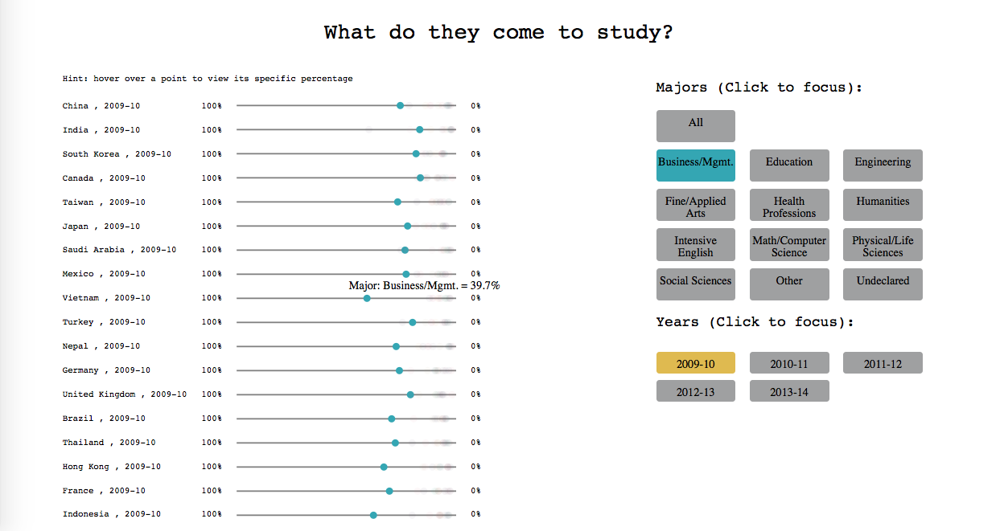

Using two data sets from Open Doors Data provided by the Institute of International Education, I built an interactive map to explore where foreign students choose to study in the United States and responsive percentage charts to display their chosen fields of study.
This project was completed for the class 05839: The Data Pipeline: Collecting and Using Data for Interactive Systems and can be found here and here.
Project Description
The first data set consisted of the number of international students by state and per year from 2010 to 2015.
I created a heat map of the United States where the color for a given state increases from beige to black depending on the number of foreign students in that state.
You can hover over a state to view the number of foreign students in that state.
You can choose the year using the buttons on the right.

The second data set consisted of the fields of study, in percentages and by place of origin, for foreign students studying in the United States from 2009 to 2014.
For each country, I created a percentage line from 0% to 100% and placed a point on that line for each major that corresponds to the percentage of students from that country studying the given major.
You can hover over a point to view its specific percentage.
You can choose the year using the buttons on the right.
You can focus on a specific major using the buttons on the right.
 

More Information
The site is hosted on Google App Engine and the heat map was made using D3.js and open source javascript code.
The percentage charts visualization was made using D3.js.
Github